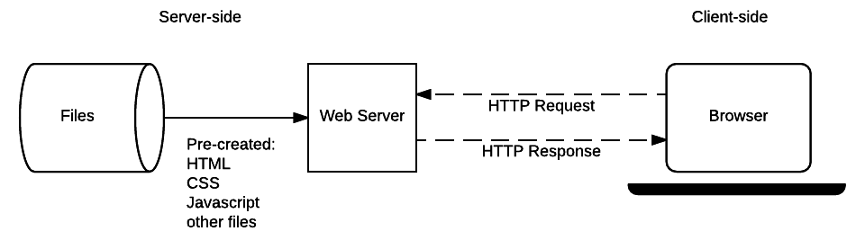

Welcome to the MDN beginner's server-side programming course! In this first article, we look at server-side programming from a high level, answering questions such as "what is it?", "how does it differ from client-side programming?", and "why it is so useful?". After reading this article you'll understand the additional power available to websites through server-side coding.
| Prerequisites: | Basic computer literacy. A basic understanding of what a web server is. |
|---|---|
| Objective: | To gain familiarity with what server-side programming is, what it can do, and how it differs from client-side programming. |
Most large-scale websites use server-side code to dynamically display different data when needed, generally pulled out of a database stored on a server and sent to the client to be displayed via some code (e.g. HTML and JavaScript).
Perhaps the most significant benefit of server-side code is that it allows you to tailor website content for individual users. Dynamic sites can highlight content that is more relevant based on user preferences and habits. It can also make sites easier to use by storing personal preferences and information — for example reusing stored credit card details to streamline subsequent payments.
It can even allow interaction with users of the site, sending notifications and updates via email or through other channels. All of these capabilities enable much deeper engagement with users.
In the modern world of web development, learning about server-side development is highly recommended.
Web browsers communicate with web servers using the HyperText Transfer Protocol ({{glossary("HTTP")}}). When you click a link on a web page, submit a form, or run a search, an HTTP request is sent from your browser to the target server.
The request includes a URL identifying the affected resource, a method that defines the required action (for example to get, delete, or post the resource), and may include additional information encoded in URL parameters (the field-value pairs sent via a query string), as POST data (data sent by the HTTP POST method), or in associated {{glossary("Cookie", "cookies")}}.
Web servers wait for client request messages, process them when they arrive, and reply to the web browser with an HTTP response message. The response contains a status line indicating whether or not the request succeeded (e.g. "HTTP/1.1 200 OK" for success).
The body of a successful response to a request would contain the requested resource (e.g. a new HTML page, or an image, etc...), which could then be displayed by the web browser.
The diagram below shows a basic web server architecture for a static site (a static site is one that returns the same hard-coded content from the server whenever a particular resource is requested). When a user wants to navigate to a page, the browser sends an HTTP "GET" request specifying its URL.
The server retrieves the requested document from its file system and returns an HTTP response containing the document and a success status (usually 200 OK). If the file cannot be retrieved for some reason, an error status is returned (see client error responses and server error responses).

A dynamic website is one where some of the response content is generated dynamically, only when needed. On a dynamic website HTML pages are normally created by inserting data from a database into placeholders in HTML templates (this is a much more efficient way of storing large amounts of content than using static websites).
A dynamic site can return different data for a URL based on information provided by the user or stored preferences and can perform other operations as part of returning a response (e.g. sending notifications).
Most of the code to support a dynamic website must run on the server. Creating this code is known as "server-side programming" (or sometimes "back-end scripting").
The diagram below shows a simple architecture for a dynamic website. As in the previous diagram, browsers send HTTP requests to the server, then the server processes the requests and returns appropriate HTTP responses.
Requests for static resources are handled in the same way as for static sites (static resources are any files that don't change —typically: CSS, JavaScript, Images, pre-created PDF files etc).
Requests for dynamic resources are instead forwarded (2) to server-side code (shown in the diagram as a Web Application). For "dynamic requests" the server interprets the request, reads required information from the database (3), combines the retrieved data with HTML templates (4), and sends back a response containing the generated HTML (5,6).
Let's now turn our attention to the code involved in server-side and client-side programming. In each case, the code is significantly different:
Code running in the browser is known as client-side code and is primarily concerned with improving the appearance and behavior of a rendered web page. This includes selecting and styling UI components, creating layouts, navigation, form validation, etc. By contrast, server-side website programming mostly involves choosing which content is returned to the browser in response to requests. The server-side code handles tasks like validating submitted data and requests, using databases to store and retrieve data and sending the correct data to the client as required.
Client-side code is written using HTML, CSS, and JavaScript — it is run inside a web browser and has little or no access to the underlying operating system (including limited access to the file system).
Web developers can't control what browser every user might be using to view a website — browsers provide inconsistent levels of compatibility with client-side code features, and part of the challenge of client-side programming is handling differences in browser support gracefully.
Server-side code can be written in any number of programming languages — examples of popular server-side web languages include PHP, Python, Ruby, C#, and JavaScript (NodeJS). The server-side code has full access to the server operating system and the developer can choose what programming language (and specific version) they wish to use.
Developers typically write their code using web frameworks. Web frameworks are collections of functions, objects, rules and other code constructs designed to solve common problems, speed up development, and simplify the different types of tasks faced in a particular domain.
Again, while both client and server-side code use frameworks, the domains are very different, and hence so are the frameworks. Client-side web frameworks simplify layout and presentation tasks while server-side web frameworks provide a lot of “common” web server functionality that you might otherwise have to implement yourself (e.g. support for sessions, support for users and authentication, easy database access, templating libraries, etc.).
Note: Client-side frameworks are often used to help speed up development of client-side code, but you can also choose to write all the code by hand; in fact, writing your code by hand can be quicker and more efficient if you only need a small, simple web site UI.
In contrast, you would almost never consider writing the server-side component of a web app without a framework — implementing a vital feature like an HTTP server is really hard to do from scratch in say Python, but Python web frameworks like Django provide one out of the box, along with other very useful tools.
Server-side programming is very useful because it allows us to efficiently deliver information tailored for individual users and thereby create a much better user experience.
Companies like Amazon use server-side programming to construct search results for products, make targeted product suggestions based on client preferences and previous buying habits, simplify purchases, etc.
Banks use server-side programming to store account information and allow only authorized users to view and make transactions. Other services like Facebook, Twitter, Instagram, and Wikipedia use server-side programming to highlight, share, and control access to interesting content.
Some of the common uses and benefits of server-side programming are listed below. You'll note that there is some overlap!
Imagine how many products are available on Amazon, and imagine how many posts have been written on Facebook? Creating a separate static page for each product or post would be completely impractical.
Server-side programming allows us to instead store the information in a database and dynamically construct and return HTML and other types of files (e.g. PDFs, images, etc.). It is also possible to return data ({{glossary("JSON")}}, {{glossary("XML")}}, etc.) for rendering by appropriate client-side web frameworks (this reduces the processing burden on the server and the amount of data that needs to be sent).
The server is not limited to sending information from databases, and might alternatively return the result of software tools, or data from communications services. The content can even be targeted for the type of client device that is receiving it.
Because the information is in a database, it can also more easily be shared and updated with other business systems (for example, when products are sold either online or in a shop, the shop might update its database of inventory).
Note: Your imagination doesn't have to work hard to see the benefit of server-side code for efficient storage and delivery of information:
For a common search term ("fish", say) you can see literally millions of returned values. Using a database allows these to be stored and shared efficiently, and it allows the presentation of the information to be controlled in just one place.
Servers can store and use information about clients to provide a convenient and tailored user experience. For example, many sites store credit cards so that details don't have to be entered again. Sites like Google Maps can use saved or current locations for providing routing information, and search or travel history to highlight local businesses in search results.
A deeper analysis of user habits can be used to anticipate their interests and further customize responses and notifications, for example providing a list of previously visited or popular locations you may want to look at on a map.
Note: Google Maps saves your search and visit history. Frequently visited or frequently searched locations are highlighted more than others.
Google search results are optimized based on previous searches.
Coincidence? Nada!
Server-side programming allows sites to restrict access to authorized users and serve only the information that a user is permitted to see.
Real world examples include:
The site you are on right now controls access to content: articles are visible to everyone, but only users who have logged in can edit them. To try this, click on the Edit button at the top of this page — if you are logged in you will be shown the edit view; if you are not logged in you will be taken to the sign-up page.
Note: Consider other real examples where access to content is controlled. For example, what can you see if you go to the online site for your bank? Log in to your account — what additional information can you see and modify? What information can you see that only the bank can change?
Server-side programming allows developers to make use of sessions — basically, a mechanism that allows a server to store information on the current user of a site and send different responses based on that information.
This allows, for example, a site to know that a user has previously logged in and display links to their emails or order history, or perhaps save the state of a simple game so that the user can go to a site again and carry on where they left it.
Note: Visit a newspaper site that has a subscription model and open a bunch of tabs (e.g. The Age). Continue to visit the site over a few hours/days. Eventually, you will start to be redirected to pages explaining how to subscribe, and you will be unable to access articles. This information is an example of session information stored in cookies.
Servers can send general or user-specific notifications through the website itself or via email, SMS, instant messaging, video conversations, or other communications services.
A few examples include:
Note: The most common type of notification is a "confirmation of registration". Pick almost any large site that you are interested in (Google, Amazon, Instagram, etc.) and create a new account using your email address. You will shortly receive an email confirming your registration, or requiring acknowledgment to activate your account.
A website may collect a lot of data about users: what they search for, what they buy, what they recommend, how long they stay on each page. Server-side programming can be used to refine responses based on analysis of this data.
For example, Amazon and Google both advertise products based on previous searches (and purchases).
Note: If you're a Facebook user, go to your main feed and look at the stream of posts. Note how some of the posts are out of numerical order - in particular, posts with more "likes" are often higher on the list than more recent posts.
Also look at what kind of ads you are being shown — you might see ads for things you looked at on other sites. Facebook's algorithm for highlighting content and advertising can be a bit of a mystery, but it is clear that it does depend on your likes and viewing habits!
Congratulations, you've reached the end of the first article about server-side programming.
You've now learned that server-side code is run on a web server and that its main role is to control what information is sent to the user (while client-side code mainly handles the structure and presentation of that data to the user).
You should also understand that it is useful because it allows us to create websites that efficiently deliver information tailored for individual users and have a good idea of some of the things you might be able to do when you're a server-side programmer.
Lastly, you should understand that server-side code can be written in a number of programming languages and that you should use a web framework to make the whole process easier.
In a future article we'll help you choose the best web framework for your first site. Here we'll take you through the main client-server interactions in just a little more detail.
{{NextMenu("Learn/Server-side/First_steps/Client-Server_overview", "Learn/Server-side/First_steps")}}